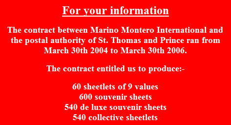

|
|
Illegal stamps - philately’s rough trade
by J. M. Chute
1 The background - an opinionated view
A new heroin?
Topicals
The death of philately
The Conquest network
The Stampdile network
Dealers
Illegals on Ebay
Big money
5 Fight back - what fight back?
The press
Dealer associations
The Universal Postal Union, the World Association for the Development of Philately, and the Web League Against Illegal Stamps
The WADP Numbering System
1 The background - an opinionated view
A new heroin?
Imagine the perfect profitable post-modern product ... Ephemeral and completely useless - a mere representation of something real - but deeply addictive, leaving its consumers, who neither know nor care about its actual nature, avid for repeat acquisitions. Ridiculously cheap to produce, it commands huge profits, with a multi-million dollar turnover way beyond its material value or cultural significance. Though trivial and innocent in appearance to outsiders, its production is entirely illegal, but “legitimate” competitors, though damaged, seem willing to turn a blind eye, perhaps fearful lest the whole market be tainted. Apparently untouchable by legal action, this product’s original sources are masked by a complex informal network of distributors and traders, each of whom can plausibly deny liability while each taking their cut. It is mushrooming in volume at an astonishing rate. And it is here to stay, at least until the bubble bursts and the whole legitimate market on which it parasitically feeds is finally discredited beyond repair. But by then, its sellers will have consolidated their fortunes. Meanwhile, almost everyone who should care seems to be firmly in denial ...
So what is this new heroin? Absurdly, we’re talking about fictitious postage stamps - tiny pieces of paper bearing gaudy pictures of things.
Topicals
Since the beginnings of collector demand, a century and a half ago, sly creators have attempted to foist bogus stamps onto the market. (The earliest and scarcest of these have become cherished classics of the genre, and now command surprisingly good prices.) As such deceptions became difficult to sustain, bogus productions became more ironic, often “issued” for clearly non-existent territories, and the object became less to deceive than to entertain. But this playfulness turned nasty during the ‘seventies as unscrupulous “agencies”, planting the seeds of today’s “illegals” boom, began to mass produce bogus issues for British offshore islands and miniscule Arab fiefdoms, in response to the insatiable and uncritical demands of “topical” collectors.
“Topical” (or “thematic”) collecting - collecting by topic, theme or subject rather than by country - is not a new approach, but in recent years has become increasingly popular. In addition to popular topics such as animals, sport, transport &c., topical stamp producers now cater particularly for collectors of personalities, especially entertainers - Marilyn Monroe, James Dean, John Lennon &c.
Many smaller and poorer countries in particular, desperate for foreign exchange earnings from stamp sales, but ill equipped to run their own design, production and marketing programs, have long outsourced these to a number of powerful agencies. Since they contract with legal postal administrations recognized by the Universal Postal Union (UPU), these philatelic agencies count as “legitimate” producers, despite the questionable ethics of their operations - we’re told that a typical small country contract might supply less than 2% of the total print run to the issuing country, with the remainder wholesaled to dealers. Contracts can be deliberately vague, with few specifics about dates of issue, number of stamps or values per issue, &c. Despite their “legitimacy”, such producers deserve censure both for their cynical and ruthless over-production, and for their tasteless exploitation of the demand for inappropriate topical designs, to which they cater more or less exclusively. But now the birds have come home to roost; in both these regards the agencies have set the pattern for their imitators, the illegal producers, who are now creaming off their trade and threatening to discredit terminally the whole market.
The death of philately
The current illegals boom came with the collapse of the Soviet Union, where profiteers took advantage of the confusion to create a flood of fictitious stamps for supposedly independent ex-Soviet territories. As their productions became more sophisticated and grew in volume, and as their trading networks extended into the wider world, they took the next logical step of producing fictitious (“illegal”) stamps for an increasing range of real nations in the developing world, astutely selecting those which, as we shall see, are in no position to contest this piracy.
It’s easy, really. Choose a vulnerable developing country, preoccupied with its own internal problems, where communications and legal resources are impoverished. Better still if the rule of law has evaporated, leaving no dominant central authority to get onto your case - plenty of those since the collapse of the old Cold War order! Float a pilot issue, and if within a few months there’s no comeback, you can proceed to milk the name for all it’s worth ... These days, anyone with a scanner and some serious image processing software can design stamps, and copyright on the imagery you steal is not a real consideration. Print in small “sheetlets” - much more convenient and profitable than large sheets of single values - and leave some imperforated at twice the price or more. No problem that your unlikely Afghanistan sheetlet featured Marilyn Monroe, even if the Taliban would never have countenanced such a thing and the Afghan postal service has long been a dead duck. Before September 11, no one would have noticed ...
Illegals are entirely symptomatic of their times. Vacuous in content, pale ghosts of something that once had function, created in the ever-blurring interface between “legitimate” business and criminality, exploiting the weakest and poorest nations on earth, these tiny, perfect masterpieces of commoditization are philately’s finest contribution to the globalized new world order. They are the little monsters that philately has bred and that will be its undoing. Sadly, they are probably the future it deserves.
Illegals are a murky business, and in the margins of the trade rumors are rife. It is not our intent to malign anyone, and in what follows we have been careful to present opinions as such, and not as facts. Every comment attributed to others is drawn from documents, emails, or notes made during phone calls, provided by several informants.
The Conquest network
Though the torrent of illegals for ex-Soviet territories must have had a variety of origins, those currently created in the name of developing nations worldwide seem, perhaps surprisingly, to boil down to just a couple of main channels.
One name that frequently surfaces is the Conquest Trading Corporation of Lithuania [Karolis Malinauskas, Algirdas Satas; PO Box 395, Vilnius 2004; conquestal@post.omnitel.net; no website], which is registered in the Bahamas, apparently as an offshore International Business Company (IBC) - one of some 60,000 created there in the last decade. (IBC’s are permitted to use titles such as “Corporation”.) The remarkably generous provisions of Bahamas law (see, for example, http://www.viewpointmis.com/Ibc2.html & /Ibc3.html) give IBC’s virtually fireproof immunity to investigation, given that no filing of financial statements or annual returns is required, while minutes of company meetings and resolutions are not available to the public. Mr Malinauskas states correctly that “The law of Bahamas under which our company was founded ... does not obligate us to keep any accounts.” Additionally, Conquest claims not to keep records of any “operations” older than six months.
Questioned about allegations of illegals production, Mr Malinauskas asserts:
“... we are resellers only. Perforated labels (or if you like to call them ‘stamps’) we have been importing for many years ... we are only a small sales company. Often we make direct purchases from the suppliers from Asian people arriving to sell labels to us; sometimes we even do not know the names of them as packages with labels are being forwarded to us by occasional couriers - trains’ passengers, etc.”
As Mr Satas puts it, more curtly, “... despite of any gossips or whatever ... we buy & sell stamps & labels and that’s it.” (The use here of the term “labels” seems like a careful disclaimer.) In the same letter, however, Satas admits to an interest in the prospect of “having a contract to produce [sic] the stamps” of a specified Asian country. (And indeed, illegals bearing the name of this country appear in Conquest’s wholesale price lists.) It is also worth noting that sheetlets wholesaled by Conquest, as identified by their lists and accompanying photocopies, have a distinctive “house style”, at least suggesting the hand of a single designer/printer.
Hypothetically, the originators of any such items might plausibly deny liability, given that those to whom they might outsource design and production could be said, literally speaking, to be the “producers”. More than one party has threatened Conquest with legal action in this respect, but, as far as we know, this has never yet been pursued.
Conquest wholesales to a number of buyers, among whom we can identify:
Eurofila Ltd of Lithuania [Ricardas Rusteika; PO Box 1099, LT-3042 Kaunas; www1.omnitel.netss/eurofila; eurofila@kaunas.omnitel.net]
Anglo-European International of the United Kingdom [Juan Carlos Marino Montero; PO Box 95, Hedge End, Hampshire SO32 2UE; Warwick House, Curbridge, Hampshire S03 2BJ; formerly France-Philatelie (2000) Ltd.]
Brussels Stamp Center of Belgium [Michel De Groote; PO Box 116, 1081 - Bruxelles; 380 Avenue de la Basilique, Bruxelles]
Eurofila’s website focuses on legitimate issues, and other material, from ex-Soviet and Slavic territories. However, its advertised price lists also discreetly include “Cinderellas from ex-USSR countries and World Wide”, with the disclaimer that "Cinderella means a label similar to a stamp ... not used for postage and not connected with a location printed on the label.” “World wide” material in these lists is identifiable with part, though not all, of Conquest’s stock.
Anglo-European’s predecessor, France-Philatelie, was incorporated as a limited company in 1997 at an address in Winchester, Hampshire, but was dissolved in July 2001, its accounts long overdue. During this period, Mr. Montero bought stamps from Conquest, but in June 2000 UPU circular 194 (more later about these circulars) was released, containing an assertion by the postal administration of Niger that Niger illegals were printed by France Philatelie, a suggestion that Mr Montero presumably did not take kindly to. A week later, he requested from Conquest documentation of the postal validity of his purchases, and in November his solicitor pressed the matter, threatening to issue proceedings. The requested documentation did not materialize, but neither did any legal action. Whatever his prior knowledge of the status of his purchases from Conquest, his solicitor’s correspondence with Conquest, later thoughtfully faxed to various interested parties, certainly put the appearance of clear blue water between himself and them.
Today Mr Montero cheerfully admits that he continues to buy from Conquest, as his price lists indicate, seemingly without any continued qualms about the nature of the material. (One of his business rivals has implied that he may have a closer relationship with Conquest, perhaps extending to some measure of ownership, but he laughingly denies this, and on the available evidence we are inclined to agree.)
The Stampdile network
Another ubiquitous name is that of Stampdile Ltd of the United Kingdom [Clive Feigenbaum; PO Box 72, Harrow, Middlesex HA2 9XJ; 454 Alexandra Avenue, Harrow, Middlesex HA2 9TL; www.stamps4dealers.com (wholesale); www.stamps2buy.com (retail); stampdile@talk21.com; stampdile@aol.com]. This company was incorporated in 1980. Clive Feigenbaum, who has had a long and interesting involvement with philately, previously traded at this address as the London & New York International Stamp Co., and also currently owns G Rosen & Son, trading wholesale at the same address. (Gerald Rosen has a long association with topical “issues” of debatable validity for offshore islands, while Mr. Feigenbaum is part owner of Easdale Island, whose stamps are disowned by the islanders on www.easdale.co.uk/stamp.html.)
In late 1998 Stampdile achieved passing notoriety for their distribution of a sheet in the name of the ex-Soviet territory of Abkhasia (part of independent Georgia) featuring a cartoon of Clinton with Monica Lewinsky. Georgia denounced this illegal but noone took the country’s protestations seriously. In April 2001 Stampdile and directors Clive and Jonathan Feigenbaum were fined £5,000 at Harrow, England, Magistrates’ Court for breach of copyright in supplying unauthorized stamps featuring Star Wars and the Teletubbies. (We are told that this ruling was reversed on appeal.) Stampdile is also said to have distributed the tacky Angola “issue” portraying the September 11 attack on the World Trade Center - more on their Angola items later.
Many illegals bear names of ex-Soviet territories. In an interesting article for the February 1999 issue of Philatelic Exporter, journalist Les Winick described how “four or five major distributors” in Russia employed homeworkers to create covers bearing such labels that were then postmarked, illegally, by favor. These covers and stamps were retailed in Russia, Israel, the USA and the UK, but Mr Winick firmly located the originator of the stamps, who decided themes and designs and placed orders for printing, in England, though he declined to name him.
Elements of Stampdile’s stock seem to be shared with that of the Belarusian International Stamp Co. (BiStamp) of Belarus [Rostislav Permiakov, Mikhas Karpovich; http://www.bistamp.com] which covers both legitimate and “unofficial” issues for ex-Soviet territories, including “Stamps of 42 territories [that] don’t have official status”, noting that “There are a lot of pretty sets of various topics” - a considerable understatement. BiStamp also admit, disingenuously, that “Recently we started selling new stamps, which don’t belong to the New Independent States. It’s quite a new area for us, and we are not sure with the origin of these issues.” These worldwide illegals, disclaimed as “Stamps with not clarified status, Stamps for fun”, also turn up in the Stampdile/Rosen lists, along with similar material for nations not listed by BiStamp. A business rival of Mr Feigenbaum has alleged that these last items are produced directly and exclusively for Stampdile, though we cannot presently substantiate this. At any rate, the producer of much Stampdile material is obviously close to BiStamp.
One factor that confuses the picture is the remarkable similarity of style and format between some Stampdile material and many Conquest productions. There are perhaps three possible reasons for this: either Stampdile occasionally buy from Conquest, or the same designer happens to be responsible for items sold by each, or there is an element of deliberate imitation, perhaps to muddy the investigative trail or to pirate successful ideas. Our bet would be on the third.
Stampdile/Rosen lists include items for Angola and Somaliland. Both these territories are linked to International Philatelic Licences (IPL) of the United Kingdom [William J (“Tony”) Mitchell; 2 Penvale Villa, St Gluvias, Penryn, Cornwall TR10 9AL]. IPL’s letter heading proclaims “est 1961”, but it existed briefly as a limited company at an address in St Ives, Cornwall, incorporated in 1998 but struck off and dissolved in late 2000, its business defined, interestingly, as “printing”. IPL appears to have a history of producing stamps on the basis of contracts claimed with breakaway administrations, though we know of no evidence that its stamps have seen use in such territories, which would not be UPU members, and so not parties to an international exchange of mail.
Somaliland is the separatist administration, not internationally recognized, based in Hargeisa in north west Somalia, while Mr Mitchell’s Angola arrangement is with the UNITA rebels, not with the central government. Mr. Mitchell is quite open that he has “rented out” his Angola contract to Clive Feigenbaum of Stampdile, an old school friend of his, though he readily admits, given the torrent of Angola stamps flooding the market (including the offensive World Trade Center issue, mentioned above), that Feigenbaum may have “overdone it”. On the other hand, Algirdas Satas of Conquest is on record as alleging that:
“Mr Mitchell from IPPL[sic] is just a crook, using blackmail technics[sic] to get money from stupid stamp dealers. I believe he himself has no real contracts and represents nobody at all.”
This follows a curious exchange in early October 2001 in which Mitchell accused Satas of producing illegals for Myanmar (ex-Burma) and threatened legal action over this, while simultaneously offering to sell on to Conquest his own contract with Myanmar for £GB 165,000, an offer dismissed by Satas as “blackmailing & phantasmagoric”. To others, Mr. Mitchell has denied ever having any contract to produce for Myanmar, though in August IPL did claim an arrangement to act as “Advisors to the Postal Administration of Myanmar”. However, no evidence has been made available to substantiate this.
Sharing an address, fax and phone number with Mr. Mitchell has been Mr. D S L (“Lutz”) Schaller, who has sometimes signed letters or made phone calls on IPL’s behalf, but also appears as “Chairman” of Philatelic Numismatic Consultant[sic] (PNC), which claims to undertake “investigative work” in cooperation with IPL, while offering “consultative services” at the remarkable rate of £GB 310 per hour. For a number of good reasons - not least the sheer creativity of his inconsistently broken English spelling (e.g. “swich bord” for “switch board”) - we are tempted to doubt Mr. Schaller’s independent existence.
Nevertheless, “PNC” has provided a useful vehicle for Mr. Mitchell’s “investigations” of the Conquest network. Claiming to be acting in cooperation with lawyers, the police (unlikely), governmental clients (really?) and the UPU (not true) in a crusade against all illegals, his efforts seem to have been particularly directed at those handling his rivals’ goods. Mr. Mitchell is quite open about his attitude to Conquest, whom he considers to have damaged his business, and readily declares that he “wants Satas’s guts”.
Dealers
While some of the above distributors sell retail, they also mainly wholesale in bulk to dealers, who provide the main points of public sale. (There are rumors of a warehouse in London, England, which supplies in bulk to selected dealers on a personal acquaintance basis.) Some of these are large and well established concerns, also handling legitimate material, and the growth of internet shopping has boosted their market. Shamefully, some are members of dealers’ organizations that pay lip service to standards of integrity (see below). The worst offenders appear to be:
Marlen Stamp & Coins Ltd of New York [Dr Leonard G Cohen; 156B Middle Neck Rd, Great Neck, N Y 11021; www.marlen-stamps.com; marlen@travelin.com]. Established for 30 years and a major advertiser in Linn’s Stamp News, Marlen’s stock includes huge quantities of Conquest and Stampdile material. Dr Cohen is very sensitive to questions about his sources.
Greg Caron Stamps [Coolstamps/10,000 Topical Stamps/Space Stamps/Princess Diana Stamps &c.] of California [Greg and Paulette Caron; PO Box 5125, Vacaville, CA 95696; www.coolstamps.com; www.topical-stamps.com; www.spacestamps.com; www.princess-diana-stamps.com]. The “web’s largest source of Cool Topical Stamps” features a worryingly spooky image of the Carons (“We treat you like family”) with links to more lovely family pictures. Semi-literate captions appeal shamelessly to children: “Take a Good look at the eyes of this cute Panda - He wants you to take him home - Just click - $3.95.” A large part of the Carons’ stock appears to be illegals. Presumably the “family-friendly” Carons think it’s just fine to rip kids off this way.
Tony Bray of the United Kingdom [71 Bradford Rd, Shipley, West Yorks BD18 3DT]. This big UK new issue dealer, established in 1971 and a major advertiser in Gibbons Stamp Monthly, handles both Conquest and Stampdile material. Some that is not advertised appears in his lists. Again, very sensitive to questions about his sources.
Wonderful World of Stamps (Judaica Sales) of Canada [Isidore Baum; P O Box 55, St. Martin, Laval, Quebec H7V 3P4; www.topicalsetc.com; info@judaicasales.com]. Established 25 years and “the largest dealer in Russian topical locals in North America ... We also carry various other locals issued by different entities around the world.” Massive stocks of ex-Soviet territory illegals, plus Angola, Somaliland &c. To be fair, described as “not valid for postage”, but “locals” is a highly misleading term here.
Illegals on Ebay
Ebay internet auctions offer an unrivalled opportunity to shift huge quantities of illegals. A determined operator, with the aid of bulk auction listing software, can post up hundreds, if not thousands, of items per week. Duplicate offers and extended bidding periods (sometimes months) make some of these sales “auctions” in name only. Even if the majority of items find no bidders, the turnover of items is so vast that the income is still worthwhile, and unsold items are easily relisted. Stampdile is often very busy in this respect, under the i d stamps2buy. Our quick search also threw up the following list, before we got tired of counting. Some of these regularly stock illegals among larger amounts of legitimate material, while others offer wall to wall illegals, mostly Stampdile/BiStamp type material. A few, sadly, are long established dealers. Some are American Philatelic Society members.
alex@stampcenter.com (County Stamp Center) [PO Box 3373, Annapolis, MD 21403]
brumstamp [Birmingham, United Kingdom]
decimavilla (Decimavilla-Filatelia) [Madrid, Spain]
discounttopicals [PO Box 7435, Rego Park, NY 11374]
gambori [California]
jrstamps50 (John Rydzewski) [PO Box R-S, Cheshire, CT. 06410]
kjfry [Maidenhead, Berks, United Kingdom]
laladreamers [Nevada]
lbphilatel (Long Beach Philatelics, Inc.) [Wilmington]
ltsung@sprint.ca Ontario Canada (Thomas Stamps) [PO Box 42190, Mississauga, Ontario, Canada L5M 4Z0]
mueller.k [04600 Skatstadt Altenburg, Leipzig, Germany]
pantonisse & verbak [Uden, Netherlands]
pmga@rconnect.com (Mini-Arts) [Estherville, Iowa]
rennie11 [Toronto, Canada]
stampbabe [Buffalo, NY]
stampnstuff [PO Box 3140, La Puente, CA 91744]
stampsoz [South Australia]
time-les [North Bergen, NJ]
No use in complaining to Ebay Customer Support about this. An auto-response will explain that “you may see active items which are in violation, and we encourage you to report those to us.” However, usually “we cannot remove items reported to us, as the content of the listing is not sufficient evidence of an infringement.” So that’s OK, then.
Big money
Lest anyone should think that we’re talking insignificant pocket money amounts, we pause here to point out that a set of Angola “20th century personalities” souvenir sheets, perf and imperf, will cost you $236.95 from Marlen, who will also ask you $419.95 for six sheets, perf and imperf, with matching “first day covers”, on the unlikely Mongolian topic of the Three Stooges. Even single items can be ludicrously overpriced; on Ebay stampsoz ask $22.50 for a single Angola Tiger Woods sheetlet. These things may be wholesaled close to source at a dollar or two each, but at the retail end of the line substantial prices are asked and paid. In November 2000 three Turkmenistan Tiger Woods sheetlets, mind-numbingly, went on Ebay for no less than $1,225.
Though these labels will never have catalog status, and therefore no “official” value, the established wisdom that “a dealer will never buy this back” may no longer apply to the most faddish topics, at least in the short term. In selected cases artificial scarcity, with claimed print runs of as low as 100 copies per item, is cleverly used to manipulate prices.
No one knows how much the global illegals market is worth. A recent estimate of the annual turnover of just one distributor, based on their price lists, came to several million dollars. An insider has suggested to us that the whole annual market is now worth between $200 million and $500 million. This may well be exaggerated, but it should be food for thought to the administrations of developing nations who have unwittingly had their names pirated for this scam.
Pornographic illegals have recently appeared in the name of Rwanda, a desperately impoverished nation still recovering from the after effects of genocide. The entire annual governmental expenditure of Rwanda is about $400 million.
A related issue is the recent resurgence of “postal forgery”, the mass production of forged current stamps. These are aimed not at the collector (though odd specimens may find a second hand market in the collecting scene) but at unscrupulous bulk mailers. In September 2000 German customs seized a shipment of 630,000 such stamps. If only at the level of gossip, there are rumors that this trade is connected with illegals production. There are also whispers that some illegals production has links with wider organized crime, ex-Soviet areas included. We know of no evidence for this, but the allegation is interesting. However, one should allow for an element of deliberate misinformation thrown out in the ongoing turf war between illegals producers.
5 Fight back - what fight back?
Organized philately, “the King of Hobbies and the Hobby of Kings”, has a wealthy and prestigious international establishment, though sometimes the well heeled at the tip of the pyramid seem too well insulated from seedier goings-on down at the rough end. The serious collectors of the future should emerge from the school kid and leisure markets, now very much focused on topicals, and precisely the markets under threat from illegals. So what are the great and the good doing to safeguard the whole body in the longer term? Or has short-termism blinded them?
The press
It is the duty of the philatelic press to sound the alarm, and loudly. To be fair, the subject has been given an occasional airing on this side of the Atlantic, but in general response has often been muted. For instance, given United Kingdom involvement in this business, we might have expected more than the occasional tiny, grudging notices of UPU circulars (see below) in the UK journals. Gibbons Stamp Monthly, once the flag ship of the philatelic press, and once not above proper investigative writing, is now reduced to the reactionary saloon bar ramblings of Ken Lake, and the clubby, snobby self-promotions of Peter Jennings FRPSL, Knight of Merit with Star in the Sacred Military Constantinian Order of St George, &c., &c. Is serious philatelic journalism dead in the UK?
Maybe the reluctance of the philatelic press to condemn illegals is connected with the sensitivities of some of their advertisers? What is Gibbons prepared to do about Bray’s adverts, or Linn’s Stamp News about Marlen’s? The case of Linn’s is interesting. In response to the warnings of columnist Les Winick, about the only philatelic writer to tackle the issue courageously, Linn’s has run a series of waspish editorial defenses, on pseudo-libertarian grounds, of “so-called[sic] illegal stamps” by Michael Laurence [www.linns.com/print/archives/20010212/editor.asp - also 20010514 & 20011231]:
“Those who are denouncing illegal stamps don't collect them. Those who collect illegal stamps don't care ... Collectors should collect what they please. Critics should get a life.”
But here’s the crunch:
“Linn's permits such material to be advertised, though we insist that the items be described as what they are, when that is known.”
Really? Aside from one or two ex-Soviet illegals listed, inaccurately, as “locals”, you’ll look in vain for any such disclaimers from Marlen. Lenny Cohen may insist that he doesn’t know what he’s selling, and Laurence may find it convenient to go along with that, but it beggars belief, especially given the regularity with which stamps distributed by Marlen are the subject of UPU circulars on illegals (see below) which name the Marlen website.
As for the mainstream press, so far we have seen no sign of interest, despite rumors that a major British newspaper was preparing an expose, but pulled the story.
Dealer associations
Dealer associations, besides promoting their members’ welfare, make lots of noises about safeguarding professional integrity. The American Stamp Dealers’ Association (ASDA) [www.asdaonline.com] submits its members to “the ASDA pledge”, including requirements to “refrain from dealing in ... counterfeit material” and “to be truthful in my advertising”. The definition of “counterfeit” may need broadening here, but the essence of the pledge is clear.
Likewise the UK based Philatelic Traders’ Society (PTS) [www.philatelic-traders-society.co.uk] (“Our reputation for honesty, integrity and professionalism spans the globe”) requires members to abide by its Code of Ethics, including:
“Counterfeit stamps shall never knowingly be offered as genuine ... If it is wished to sell items which are not postage stamps ... their status must be described.”
The lofty objectives of the International Federation of Stamp Dealers’ Associations (IFSDA) [www.ifsda.com] include “To promote and maintain a high standard of professional integrity among Philatelic dealers throughout the world” while the Federation is pledged to cooperate with others “in actions to prevent or reduce the sale of stamps which have not been issued under satisfactory circumstances.”
We would be fascinated to know of an instance of a dealer association taking any action against a member for infringement of these rules in connection with illegals. We haven’t heard of any, and don’t expect to.
Of those mentioned above as trading in illegals, Dr Leonard Cohen of Marlen is a member of ASDA, Isidore Baum of ASDA and the Canadian Stamp Dealers’ Association (CSDA), Tony Bray of the PTS, and Mr J C Marino Montero of Anglo-European of the Sociedad de Comerciantes Filatelicos de la Republica Argentina (SOCOFIRA), an IFSDA affiliate. Dr Cohen and Clive Feigenbaum of Stampdile are virtually the only members outside Israel of another IFSDA affiliate, the Israel Stamp Dealers’ Association (ISDA), a privilege they share with Mr. Sam Malamud of the powerful Inter-Governmental Philatelic Corporation (IGPC), the largest “legitimate” agency producing topicals [see IFSDA website]. Maybe IFSDA Vice-President and ASDA board member Malamud should keep more respectable company?
The Universal Postal Union, the World Association for the Development of Philately and the Web League Against Illegal Stamps
If the trade won’t put its own house in order, how can vulnerable postal administrations regain their philatelic earnings, creamed off by the illegals business? Since, as mentioned above, they are members of the Universal Postal Union, what can the UPU do to aid them?
Although the UPU can share information, it cannot take legal action on behalf of its members against those handling illegals, and its role is strictly advisory. Staff at the International Bureau of the UPU heroically attempt to monitor the rapid growth of those illegals about which they receive information (a Herculean task), and advise member administrations of the appearance of illegals in their name. Official complaints by members are distributed in UPU circulars, and 49 such circulars have been issued since 1996, on behalf of:
|
Afghanistan Angola Argentina Azerbaijan Bosnia Centrafrique Chad |
Comoros Congo Cyprus Equatorial Guinea Georgia Greece Kyrgyzstan |
Laos Madagascar Mali Mexico Mongolia Morocco Niger |
Russian Federation Rwanda Senegal Turkmenistan Ukraine United Arab Emirates Saudi Arabia |
The affected regions, republics &c. of the Russian Federation are:
|
Adygea Altai Amurskaya Antarctic Regions Bashkortostan Buryatia Chechenia Chuvashia Dagestan |
Evenkia Franz Josef Land Ingushetia Ishkeria Jewish Region Kabard-Balkaria Kalmykia Kamchatka Karachay-Cherkessia |
Karelia Khakass Kolguev Komi Koriakia Kunashir Kuril Mari-El Mordovia |
North Ossetia Novaya Zemla Novosibirsk Sakhalin Spitsbergen Sakha (Yakutia) Tatarstan Tuva Udmurtia
|
At the time of writing, a circular for Guiné-Bissau is imminent, while “likely denouncements” are awaited from Burkina Faso, Burundi, East Timor, Estonia, Guinea, Kosovo, Myanmar, Sao Tome é Principe, Somalia, and Tadjikistan, as well as others already listed. This may give some idea of the scope of the problem, which now appears far greater than once had been thought possible.
Though these circulars are made available to the philatelic community, they are, bizarrely, not yet posted on the UPU website [www.upu.int], though they are helpfully reproduced on the sites of the Worldwide Society of Russian Philately [www.home.nestor.minsk.by/fsunews], AskPhil [www.askphil.org/d000.htm] and the Philatelic Webmasters' Association (see below).
Within the World Association for the Development of Philately (WADP), the UPU is partnered by:
The International Federation of Philately (FIP) [www.f-i-p.ch]
The International Federation of Stamp Dealers' Associations (IFSDA) (see above)
The International Association of Philatelic Journalists (AIJP)
The International Association of Editors of Postage Stamp Catalogs and Publications (ASCAT) [http://www.collect-a-rom.nl/ifsda/ASCAT/index.htm]
Neither IFSDA, FIP or ASCAT has yet managed to reproduce the UPU circulars online.
Philatelic journals usually manage to find a small corner in which to announce the release of these circulars (though not to reproduce them) in the smallest possible type. At Linn’s (see above) Michael Laurence describes UPU circulars as “aggressive”, criticizing their brevity while refusing to publish them in detail or to add images (which in any case it is not UPU policy to supply):
“Linn's wouldn't publish photos even if the UPU were to provide them. We don't have the space (or the inclination) ...”
Of course, if Laurence did publish the texts of the circulars, his readers might notice Linn’s advertiser Marlen writ large in some as a seller of illegals, and that would never do ...
It has been left to others to pursue a more active approach. AskPhil provides a first rate write-up by Les Winick [www.askphil.org/dintro.htm] plus UPU circulars, while on the website of the Swiss-based Philatelic Webmasters’ Association, Victor Manta maintains a busy and informative sub-site [www.pwmo.org/Illegals/frame-illegals-en.htm] where good background information is provided, the UPU circulars are again reproduced, and where sellers of illegals are named and challenged on behalf of the “Philatelic Web Watch” of the Web League Against Illegal Stamps. We applaud his efforts!
The WADP Numbering System
For better or for worse, the WADP’s main weapon in the fight against illegals is to be the WADP Numbering System (WNS), agreed unanimously at its General Assembly in Brussels on June 12 2001, and coming into force from 2002. The idea (see UPU and FIP websites) is simple: every genuine stamp notified by member nations to the UPU from Jan. 1 2002 will be given a unique WNS number, complementing the numbering systems used by established catalogs. This data will be made available to the philatelic industry. Stamps without WNS numbers will not be eligible for display in competitions sponsored by the FIP.
The WADP declares this “the optimal method for ensuring authenticity” and “a major breakthrough in the philatelic world,” while the FIP believes that this scheme will “undoubtedly be the best method to protect our hobby against illegal issues.”
But will it? Once stamps are listed in the established catalogs, their status is defined anyway. Admittedly, the WNS will usefully fill the information gap in the period between the appearance of a new item and the publication of the next catalog, but only if all involved are committed to its success. Already, the omens are not good: Michael Laurence of Linn’s (see above), scoffing at anything emanating from the “marbled halls” of the UPU, has declared that “this idea will go nowhere.”
Despite the pledged support of all WADP partners, ASCAT included, Gibbons and Scott’s, the main English language catalog publishers, have declined to incorporate WNS numbers. Postal administrations will have to pay to register their issues with the WNS, and it appears that, for the time being, those not yet plagued by illegals are reluctant to do so; we’re told that a third of UPU members have signed up in the first month of the scheme. WADP unanimity still has some way to go ...
If the WNS does anything to impede the growth of illegals, it deserves to be successful. But irrespective of any debate about its viability, there is a danger that it will be claimed as a sufficient measure by those in philately with a responsibility (and a reluctance) to do more, but with a need to be seen to be “doing something”. The self-regulatory approach of the philatelic trade, like most self-regulatory approaches, is a demonstrable failure, and merely serves as a poor cover for short-termism and self-interest.
The World Intellectual Property Organization [www.wipo.org] defines “geographical indications” and “appellations of origin” as “industrial property” protected by copyright under national laws - with sanctions ranging from injunction preventing unauthorized use up to imprisonment - and by international treaties, notably Articles 22 to 24 of the Agreement on Trade-Related Aspects of Intellectual Property Rights (TRIPS). Additionally, from the collector viewpoint, consumer protection laws are clearly relevant here.
Despite the problems with evidence of production (as opposed to distribution) that appear to have bedeviled earlier attempts, major players in the illegals business could, and should, be pursued in the courts. A case can be built. But who within the philatelic establishment has the will, the authority and the resources to undertake this, and to coordinate an international legal effort?
Whatever the consequences for the future of philately, in the final analysis the rooking of relatively affluent Western and Asian collectors with more money than judgment matters less than the exploitation and impoverishment by illegals producers of some of the poorest and most vulnerable populations on earth.
(Editor's note: the opinions expressed in this article belong to its author. We'll remove any information that should be proved inexact).
PWO. Update of May 18, 2012. E-mail from Mr. J. Marino Montero
The PWO received today an unsolicited message, with an empty Subject line, from the person mentioned in the above title. It reads:
"
http://www.sao-tome-e-principe-official-stamps.com/
STOP TO TELL RUBISH MY LAST ADVICE AND IF YOU WANT PROPER INFORMATION YOU MUST CONTACT ME "
The return e-mail address is the one published on the page pointed by the link. See below an excerpt from this page:

Its author seems to have lost the sense of measure and presents aberrant contracts for amounts that are harmful for philately.
The page reads also: "The stamps that have been produced under the terms of the contract have been submitted to the UPU's WNS system (see sample below and full details to right) and therefore registered as legal by the St. Thomas and Prince post office."
Obviously, anyone can send anything to the WNS system, a fact that doesn't provide legitimacy to its production.
|
Published: 06/21/02. Revised:
05/18/2012
. Copyright © 2002 - 2012 by J.M. Chute & the PWO. All rights reserved worldwide. |
|